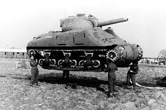
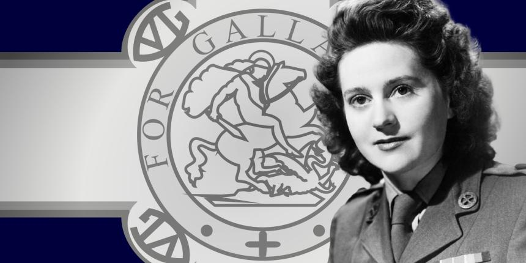
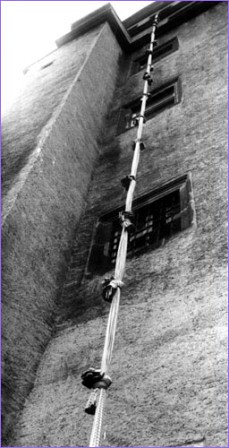
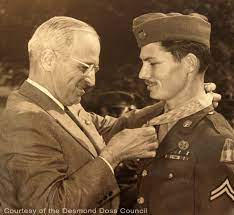
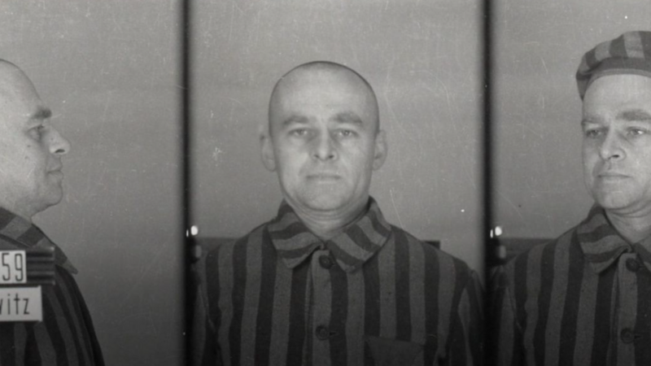

El "ejército fantasma" que venció a los nazis
Operación Fortitude, junio 1944

En tiempos de guerra, a los artistas se les presupone un papel menor al de un soldado o un aviador, por ejemplo.
Pero a partir de la Primera Guerra Mundial los ejércitos se dieron cuenta de cómo podían beneficiarse de los conocimientos de los artistas.
Sobre todo, en el campo de la ilusión óptica.
Leer más
3 Mujeres que ganaron la medalla George Cross
Odette Sansom, Noor Inayat Khan y Violette Szabo 1940

En 1940, Winston Churchill ordenó al Ejecutivo de Operaciones Especiales (SOE), una fuerza de espionaje británica recién fundada, que "incendiara Europa ". A lo largo de la Segunda Guerra Mundial, muchas valientes agentes secretas hicieron precisamente eso. Pero fue el notable heroísmo de tres mujeres en particular lo que les valió el más alto honor civil por su valentía: la George Cross.
Leer más
Fuga de Colditz | Cuerda de sábanas
Dos oficiales polacos intentan escaparse de Colditz utilizando una cuerda hecha con sábanas

El día 12 de mayo de 1941, se registró otro intento de fuga en el Castillo de Colditz. Esta vez, los reclusos que lo intentaban eran los oficiales del ejército polaco Miki Surmanowicz y Mietek Chmiel. El plan consistía en bajar haciendo rappel por un muro de 36 m. de altura.
Leer más
el héroe de la segunda guerra mundial que nunca disparó una bala
Objetor de conciencia Desmond Doss

La tranquila vida de Desmond Doss, un hombre con unas profundas convicciones religiosas, se vio alterada tras el estallido de la Segunda Guerra Mundial, cuando se alistó en el ejército norteamericano. Destinado al frente del Pacífico formando parte del cuerpo médico, Doss, que debido a sus ideas iba desarmado, salvó la vida de casi cien compañeros en Okinawa sin disparar una sola bala.
Leer más
La increíble historia del hombre que se ofreció voluntario para ser encarcelado en Auschwitz para derrotar a los nazis
Oficial Witold Pilecki, 1940

Durante mucho tiempo su nombre fue un tabú.
Pero con el tiempo se le empezó a recordar como se recuerda a los héroes.
Se trata de Witold Pilecki, oficial del ejército polaco que en 1940, cuando su país acababa de ser ocupado por las tropas de la Alemania nazi, se ofreció como voluntario para ser encarcelado en el campo de exterminio de Auschwitz.
Leer más
Ver más entradas